Table of Contents
- What is JP1?
- Why do I Need JP1?
- What Equipment Do I Need?
- How Do You Use IR.exe?
- How Do You Load An Upgrade?
- How Do You Create An Upgrade From Scratch?
- Summary 1 - Loading An Upgrade
- Summary 2 - Creating An Upgrade
1. What is JP1?
JP1 is a home-made process that you can use to re-program your UEI remote (ie, One For All and Radio Shack brands) from your PC. Not only does it allow you to manage your macros, etc in a much easier way than doing it on the remote itself, it also lets you overcode some of the silly restrictions that are programmed into these remotes and it lets you add upgrades which let the remote to control devices it would not otherwise control.
2. Why Do I Need JP1?
If you have a JP1 compatible remote, but it doesn't control all of your devices, you need JP1 so you can add upgrades which will let your remote control those devices. While some UEI remotes are equiped with modems that allow you to download upgrades over the phone (or web), this only works if UEI has already developed an upgrade for your un-supported device. With JP1 you don't need to wait. In most cases, someone else has already developed an upgrade that you can use, and even when there's no upgrade available, you can easily create one yourself, as I will describe in this document.
3. What Equipment Do I Need?
Well, for starters, you need a JP1 compatible remote, these are remotes made by UEI. The two main brands that you will find in the stores are ‘One For All' and ‘Radio Shack', but there are several other remotes out there that are also JP1 compatible. To see if your remote is JP1 compatible, open up the battery compartment and see if there's a 6-pin conenctor in there (like the one below). If you see 6 holes rather than a 6-pin connector, you remote probably needs extra parts to be JP1 compatible.
Image 3.1 - the 6-pin connector.
Next, you need a JP1 cable. While these are easy to make yourself, for most people it's simpler to just buy them ready made as prices start at just $14.
You can buy JP1 cables from the following web sites:
www.hovisdirect.com
jp1.filebug.com
www.diygadget.com
You will need a Windows based computer, Macs and Linux based machines are not supported at this time.
Finally, you will need the JP1 software, which you can download for free from the Tools folder of the JP1 File Section. It is also beneficial if you have MS Excel 97 or 2000 as some of the JP1 tools are really Excel spreadsheets.
4. How Do You Use IR
This is the program that you use to communicate with your remote. You can use it to download your current programming, you can save a copy of your current programming on your PC as a backup, you can make changes to the programming, including adding upgrades, etc and you can re-load it to your remote.First, download the program IR from the Tools folder. Unzip the contents of the file into a folder on your PC. Next download the current set of RDFs, also from the Tools folder and unzip these into a separate folder. Finally, you will need to establish a link between the RDFs and IR. To do this, fire up IR and select File > Set RDF Path, this will bring up a standard Windows pop-up screen where you can select the folder you created for the RDFs. You will also need to download the DecodeIR.dll program, which you can either store in the same directory as IR.exe, or better yet, you should store in your Windows / System directory as it is used by several other JP1 programs.
I am going to show some screen shots of the IR program, if you want to walk along with these, you can open the file ‘FromRob.txt' that's included in the IR zip file.
First things first, start up the IR program and, with your remote connected to the JP1 cable, click on the ‘Download From Remote' button. You should see a screen somewhat like that shown in Image 4.1.
You'll notice that the IR program is deviced into several tabs. The actual tabs displayed will vary by remote, for example, if your remote doesn't have learning, the learning tab may not be displayed.
I am now going to briefly describe some of the main tabs that you will use, but I will skip a couple that I will cover later.
Image 4.1 - IR.exe's General Tab
General Tab.
With the General Tab selected, you can see what setup codes you have assigned to each of the device buttons on your remote (eg, on this remote, the TV/0156 code is assigned to the TV button). You can also see how any of the other settings have been programmed (eg, on this remote, Volume Punch Thru is turned on and is set to the TV device)
Key Moves Tab.
"Key Moves" are buttons programmed using the Key
Mover function, which can either mean the button was copied from another
button, or it was programmed using an advanced code. This tab shows you all
the keymoves programmed in this remote. You can also edit, add or delete
keymoves from this tab.
Macros Tab.
As the name implies, this tab shows you all the
macros you have programmed.
Learned Signals tab.
This tab shows you all the buttons that you
have programmed using the remote's learning function. In addition to showing
you which buttons hold learned signals, it also shows you what those learned
signals look like, but more on that later.
5. How Do You Load An Upgrade
If you have an unsupported device, take a look in the Device Upgrades folder at http://www.hifi-remote.com/forums and see if there's one ready-made that you can use. Remember, you don't typically need to find an exact match on the model number of the device as most major brand manufacturers use the same IR signals for all similar devices (ie, for all TVs, etc).
If you don't find a file there, check at the old JP1 group at Yahoo. There are two places to check: Device Codes and RM Upgrade Files.
If you find an upgrade, be aware that KM files (.txt) can usually be used with either KM or RM, but RM files (.rmdu) can only be used with RM.
If you find a file you can use, you need to open the file using either KM (Keymap Master) or RM (Remote Master), both of which can be downloaded from the Tools folder.
Since there are two tools for handling device upgrades, we are often asked which one is preferred. The answer is neither. They each have their own advantages and disadvantages:
- Keymap Master (KM)
- It's the original. Some things that were implemented have not (yet) been implemented in RM.
- It requires Microsoft Excel '97 or later. It will not work with any other spreadsheet application. Excel is expensive.
- It can only load KM device upgrade files.
- Has support for some more protocols than RM (the list is getting smaller all the time).
- RemoteMaster (RM)
- It's the new kid on the block! The first prototype was made available on 2/10/2003.
- It does NOT require Microsoft Excel. It uses Java instead. Java is a free download.
- It has a (subjectively) better user interface. It provides a graphical interface for assigning functions to buttons.
- It can load most KM or all RM device upgrade files. It cannot load KM files that use unsupported protocols.
I will describe here how to use RM. Please read the Getting Started section of RM's Readme.html file for system requirements and installation instructions.
The first time you use RM, a pop-up will appear declaring No RDF files were found!. Now to worry, just press the OK button, and RM will display a file dialog for you to specify where you've placed the RDFs. It defaults to the rdf subdirectory in the directory you installed RM. Just navigate to the folder in which you've placed the RDFs and press the Open button.
Let me warn you in advance, RM can look quite intimidating, this is because you can use it to create brand new upgrades, but when all you need to do is load a ready-made upgrade, which is what we're doing here, you can ignore 90% of what you see in RM.
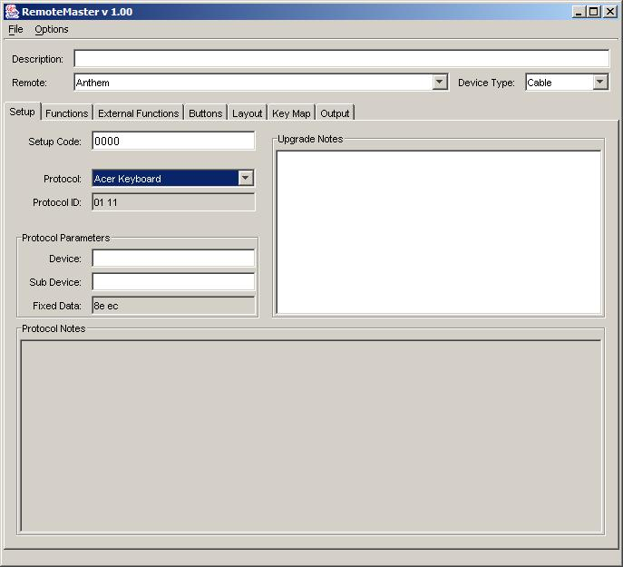
Image
5.1 - RM's initial screen.
Image 5.1 shows what RM looks like when it's first opened. Use the Open... menu item on the File menu (circled in red in Image 5.2) to open the upgrade file that you downloaded from the file section.
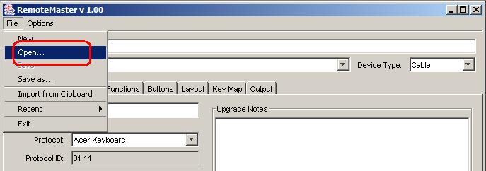
Image
5.2 - Opening a file in RM
This will bring up RM's open file dialog. In order to load a KM upgrade file, you must change the Files of type: field to KeyMapMaster device upgrade files as shown in Image 5.3.
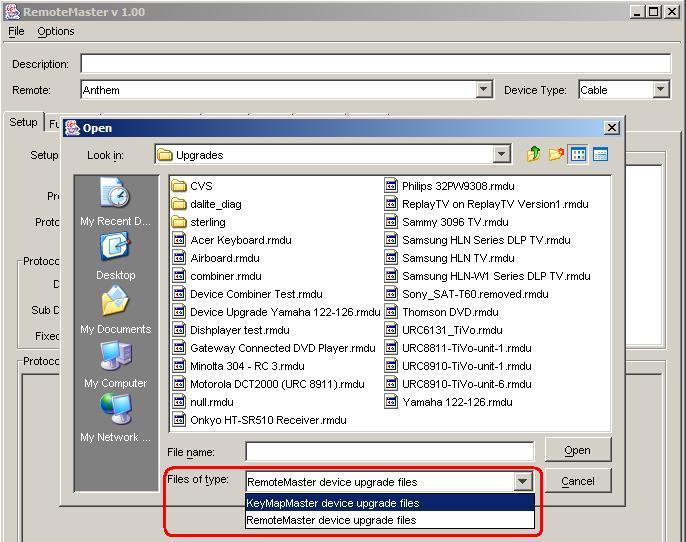
Image
5.3 - RM's File dialog
Loading the file will automatically populate all the required fields in RM. For this example I am going to load one of the files for ReplayTV. Image 5.4 shows what RM looks like with an upgrade loaded.
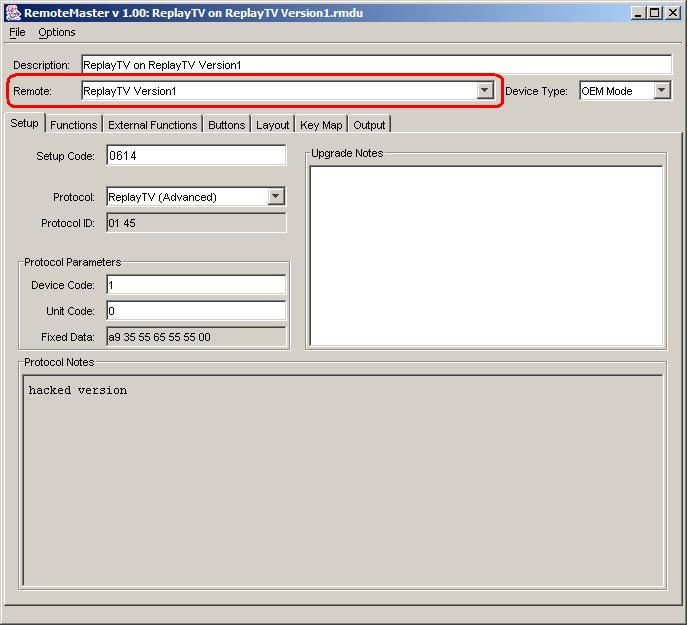
Image
5.4 - RM with an upgrade loaded.
You'll be pleased to know that the only part of this screen that you need to worry about at this point is the one circled in red.
Use the "Remote" drop down menu to change the selected remote to the remote you are trying to program. This is the only setting that you really need to change. You can change the "Device Type" setting if you want, and you can change the "Setup Code" number, but you don't need to. For now, you can ignore everything else on this screen.
The next screen in RM that is of interest to you is the "Functions" panel, shown in Image 5.5. The entries listed here are all the functions that the user who created this upgrade chose to include. Hopefully this is a complete list, but that's not always the case. If you have additional codes that you have obtained from elsewhere, you can add them here. Make sure that when you enter the additional codes you put them in the corrent column, either "OBC" (which stands for "Original Button Code") or "EFC" (which stands for "Extended Function Code", which are also known as "advanced codes")
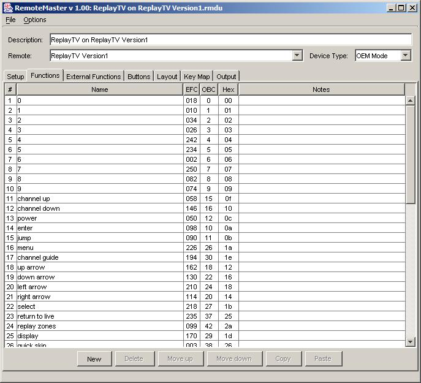
Image
5.5 - RM's Functions Panel
The next screen of interest is the "Buttons" panel, as shown in Image 5.6. On this panel, you can check that the functions are assigned to the buttons of your choice. Remember, just because it made sense for the buttons to be assigned the way they are for the original selected remote, doesn't mean it will make sense for your remote. You can assign functions to buttons in 4 different ways:
- Press the Auto assign button to get some functions automatically assigned. The ones that get assigned automatically are the ones where you used the default function names and there's an equivilent button on your JP1 remote for that function. You are under no obligation to accept these default assignments.
- Drag-n-drop a function onto the desired button
- Right-click on a button and select the desired function
- Click on a button (It will he outlined in white), then double-click the desired function.
Note: if a button is greyed out, it either doesn't exist on your remote, or it's not possible to program it.
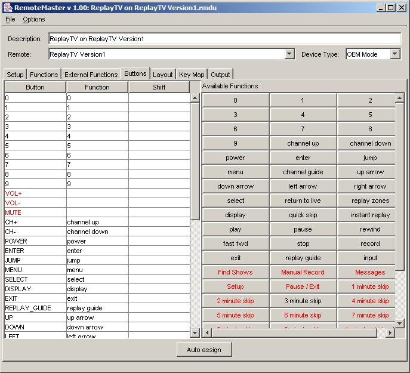
Image
5.6 - RM's Button Panel
RM provides another way to check the assignment of functions to buttons, the Layout Panel, shown in Image 5.7. On this panel, buttons with assigned functions are colored in yellow, and buttons that are present in the key map for the selected device type are outlined in orange. Also, functions can be assigned to buttons in 4 different ways:
- Press the Auto assign button to get some functions automatically assigned. The ones that get assigned automatically are the ones where you used the default function names and there's an equivilent button on your JP1 remote for that function. You are under no obligation to accept these default assignments.
- Drag-n-drop a function onto the desired button
- Right-click on a button and select the desired function
- Click on a button, then double-click the desired function.
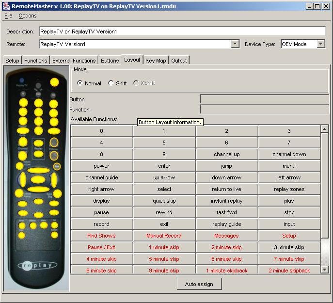
Image
5.7 - RM's Layout Panel
Once you have entered any additional functions that you have codes for, and have assigned the functions to the buttons of your choice, you are ready to load your upgrade. To do this, go back to the Output panel, shown in Image 5.8. The block of code circled in green is your device upgrade, click on Copy above and to the right to ‘copy' the code to the clipboard.
Note: You can also ‘copy' the code by right-clicking on it, and selecting ‘Copy' from the pop-up menu.
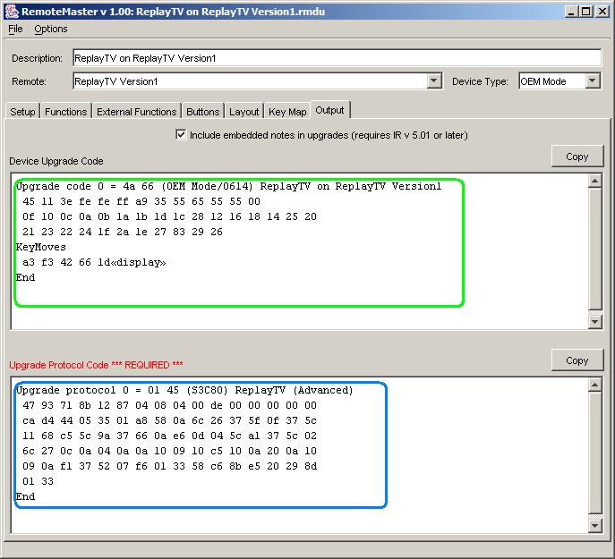
Image
5.8 - RM's Output Panel
Back in IR.exe you will need to select the "Devices" tab, as shown in Image 5.9. This is one of the tabs that we skipped over earlier. Press the ‘Add' button and paste the code that you copied into the pop-up window.
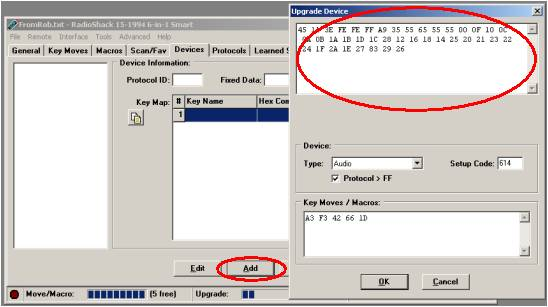
Image
5.9 - IR's Devices Tab - Add pop-up Screen.
The paste function will automatically populate the Device Type and Setup Code boxes, even though IR will let you change these settings, it's not a good idea to do so. If there are keymoves associated with this upgrade, those will get populated into the Key Moves / Macros box.
If RM displays a protocol upgrade (in the area marked with a blue circle in Image 5.8) you will also need to copy this over to IR. You can use the Copy above and to the right or you use the copy function in the pop-up context menu. Then in IR you will need to go to the Protocols tab, as shown in Image 5.10. Click the ‘Add' button and then paste the protocol code into the pop-up window. The Protocol Id field will be populated automatically.
Don't forget to assign the new setup code that you created to an actual device button!
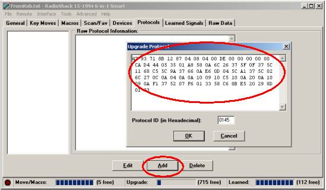
Image
5.10 - IR's Protocols - Add Pop-Up Screen
6. How Do You Create An Upgrade From Scratch?
If you have an unsupported device, and you you can't find an upgrade file for it in the file section, your next step is to create one yourself. If you have a JP1 remote with learning, this is easy to do. If you don't have a learning remote, all is not lost. I'll discuss what you can do in that situation a little later.
To create an upgrade yourself, here's what you do. First, download your remote's current memory and save it. You can always use this file to restore the remote to it's current condition later, if needed. Next, delete any learned signals that are already in the remote. The easiest way to do this is to go to the "Learned Signals" tab in IR and click the "Delete All" button, then reload. To do it using the remote itself, for non LCD remotes, you can use the 980 command, and for LCD remotes, you can select "OPS RESET" from the LCD menu screens.
Next up, you'll need to learn as many buttons from your original remote as you can. Most JP1 learning remotes can only learn about 24 buttons before the memory is full, so it's probably going to take a couple of passes to capture all the buttons from the original remote. I recommend that you start off learning all the buttons that have equivilent buttons on the JP1 learning remote (eg, the numeric buttons, volume and channel buttons, etc). When you reach the memory limit, download the memory and save the file. Then delete all the learned signals like you did before and continue learning. As soon as you reach the memory limit again, or you run out of buttons to learn, download and save the file. When you start learning the more unusual buttons from your original remote (eg, ANGLE, ZOOM, etc) be sure to make a note of which button you learned them to on your JP1 remote.
Once all the buttons are learned, you can start the process of decoding them. To do this, go to the "Learned Signals" tab in IR. You will see all your learned buttons listed in the column on the left. When you click on one of these entries, the infra red info will be displayed on the right, as shown in Image 6.1.
Image 6.1 - IR's Learned Signals Tab
In image 6.1 you can see that the RECORD button in AUX1 mode has been selected. In this case, IR was successfully able to decode the signal and has displayed the IR info. This signal uses the NECx2 protocol, with a device code of 5 and a sub-device code also of 5. Chances are, all of the buttons for this device with use the same protocol and device codes, what will change for each button are the OBC and EFC codes. Just FYI, this is the ‘record' button for a Samsung VCR, which responds to the VCR/0240 setup code.
To start creating an upgrade for this device, you should fire up RemoteMaster. Then in the Setup tab, you should make the entries described in the following table. Image 6.2 shows RM's Setup panel after all the correct entries have been made.
| Desciption | Enter a brief description of the device being programmed. In this case we'll enter "Samsung VCR" |
| Remote | Select the remote you are programming. |
| Device Type | Select the type that most closely matches the device you are programming. In this case we'll select VCR. |
| Setup Code | As we already know that this VCR responds to the VCR/0240 code, the standard convention for upgrades is to add 1000 to that, giving us VCR/1240. If there's no official code that works your device (as far as your know), use 2000 or greater for this entry. (The max value is 2047) |
| Protocol | Select the protocol displayed in IR. In this case we'll select NECx2. If you're unsure which protocol to use, consult the readme file that's in the KM zip file. |
| Device Number/Sub-Ddevice | Enter the values displayed in IR, in this case we'll enter 5 in both. The displayed labels for these boxes varies based on the selected protocol. |
| Upgrade Notes | This is the data block to the right of the screen. You can use this space to enter any notes about this upgrade that might be useful to you or to someone else who later uses this upgrade. |
Image 6.2 - The beginnings of an upgrade
So far so good, now you need to go to the Functions panel and enter the data for all the buttons that you learned. It's a good idea to understand RM's terminology at this point. The word "Functions" refers to the buttons that you learned from your original remote, you can use the exact names as printed on your original remote, or you can expand it a little to make it easier to understand. For example, you might have a button labelled "CHP/TME" but it might be a good idea to enter it as "Chapter/Time". Alternatively, you could enter it as "CHP/TME" then make an entry in the Notes column to describe what it does. When RM refers to "Buttons", it's referring to the buttons on your JP1 remote, not your original remote.
When you first go to the Functions tab, you will see a lot of function names already entered, as shown in image 6.3. These entries are just defaults designed to save you some typing, you are under no obligation to use them. You can delete them all if you like.
Using the example of the RECORD button for my Samsung VCR, I can now enter the OBC code of 20 next to the default entry for the RECORD button. Once you've entered all the standard buttons for your device, you can delete all the remaining entries. For the more unusual buttons, you will need to create new entries for them. Please enter the data for all the buttons on your original remote, even if you have no intention of programming them to physical buttons.
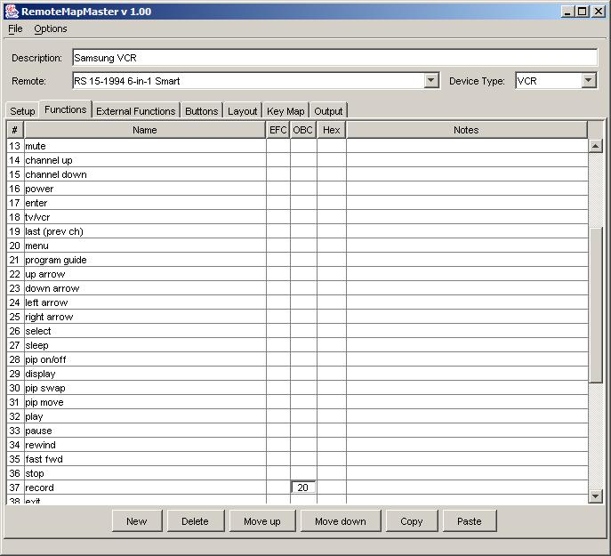
Image
6.3 - RM's Functions Panel - default screen
Once you have entered all the info for your learned buttons, your next step is to assign those functions to the buttons on your remote. You can do this on the Layout or Buttons panels.
You can assign functions to buttons visually using the Layout panel, shown in Image 6.4.
You'll notice that the list of functions that you entered in the Functions sheet is displayed on the right. Once a function has been assigned to a button, the name of that function is written in black. Functions that haven't been assigned are written in red. You'll notice that the input toggle function has not been assigned and I am using the context menu to assign it to the Program/Guide button. Buttons with assigned functions are colored in yellow, and buttons that are present in the key map for the selected device type are outlined in orange. You can assign functions to buttons in 4 different ways:
- Press the Auto assign button to get some functions automatically assigned. The ones that get assigned automatically are the ones where you used the default function names and there's an equivilent button on your JP1 remote for that function. You are under no obligation to accept these default assignments.
- Drag-n-drop a function onto the desired button
- Right-click on a button and select the desired function
- Click on a button (It will he outlined in white), then double-click the desired function.

Image
6.4 - Assigning functions to buttons in RM's Layout panel
If you find that many of the buttons that you want to program are not outlined in orange, meaning they aren't included in the key map for the selected Device Type, it might be a good idea to try using a different Device Type. Maybe there's a device mode available that has more buttons included that you can use. You won't always want to pick the mode with the most buttons, just pick the mode that has the most buttons that you wish to program included. There are a couple of things to consider before you chose a different device type though. First off, if you use a device type that is different to the default device type for the device button that you're intending to program, it will break VPT (Volume Punch Through). This may or may not be of concern to you. Secondly, if you are programming a remote with an LCD screen (like the 15-2116, URC-8910, etc), the mode you pick is what will be displayed on the screen when you select this device. So for example, if you are creating an upgrade for a VCR and you use CBL as your device type, "CBL" or "CBL2" is what will appear on the screen when you press the VCR device button. Again, this may or may not be an issue for you.
The Buttons panel is shown in Image 6.5. You can assign functions to buttons in 4 different ways:
- Press the Auto assign button to get some functions automatically assigned. The ones that get assigned automatically are the ones where you used the default function names and there's an equivilent button on your JP1 remote for that function. You are under no obligation to accept these default assignments.
- Drag-n-drop a function onto the desired button
- Right-click on a button and select the desired function
- Click on a button (it will be highlighted), then double-click the desired function.
You'll notice that the list of functions that you entered in the Functions sheet is displayed on the right. Once a function has been assigned to a button, the name of that function is written in black. Functions that haven't been assigned are written in red. In image 6.5 you'll notice that the input toggle function has not been assigned and I am using the context menu to assign it to the Program/Guide button.
If a button name is followed by an asterisk ("*"), it means that it cannot be included in the upgrade and will be programmed using a keymove instead. All functions assigned to shifted buttons will be programmed using keymoves.
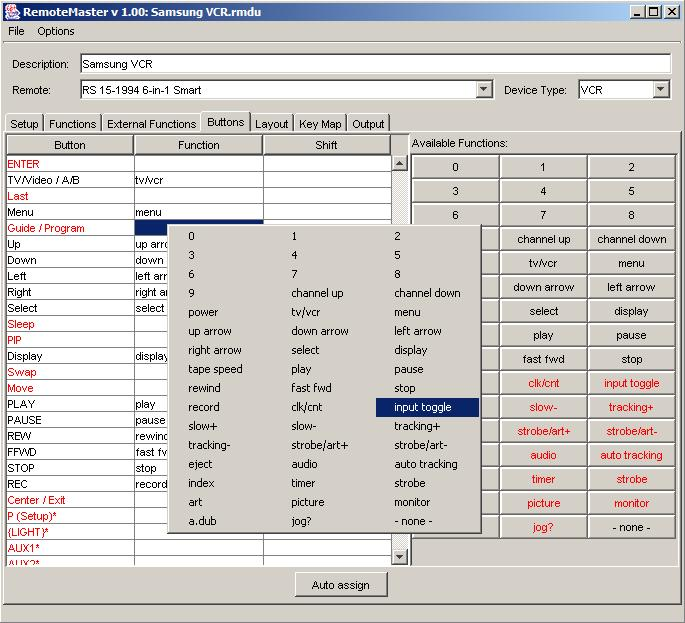
Image
6.5 - Assigning functions to buttons in RM's Buttons panel
Once you've finished entering all the functions and assigning them to buttons, you should save your device upgrade using the Save As... item on the File menu. In order to be a good citizen, you should then load this file into the appropiate folder in the Yahoo group for others to share.
Finally, you should copy this upgrade over to IR following the same procedures outlined in section 5 of this document. Don't forget to assign the new setup code that you created to an actual device button!
If you don't have a learning remote
There are sometimes other ways to get the required data. If you have found a setup code that works some of the functions, post a message in the forums mentioning what that setup code is and one of us will give you the data you need.Another good source for this data in the Pronto file section at Remote Central. If you can find a file there for your device (remember, you don't necessary need to find an exact match for the model number of your device), you can download the file and run the DecodeCCF program (available in the Yahoo file section) against it. This program will create a text file, that you can open with a spreadsheet program such as Excel, that lists the protocol and other codes for all the learned signals contained within the CCF file.
In Closing
I hope this document has helped show you how easy using JP1 can really be. I was inspired to write is because of the numerous posts I have seen in the forums where people say "I know I can do it with JP1, but that looks too difficult for me".I hope to see you in the forums: http://www.hifi-remote.com/forums/
Good luck,
Rob (http://www.hifi-remote.com/) and Greg
(http://controlremote.sourceforge.net/)
Summary 1 - Loading an Upgrade
- Download the upgrade file from the Yahoo group.
- Load it into RM using the Open... menu item on the File menu.
- Change the remote to your remote.
- Enter any addition functions that you have codes for in the Functions panel.
- Re-arrange the buttons as you see fit in the Buttons or Layout panels.
- Copy the code blocks from the Output panel over to IR.
- Assign the new setup code to a device button in IR and re-load into your remote.
Summary 2 - Creating an Upgrade
- Learn the buttons from your original remote and download using IR.
- Go to RM. If there's old data there, click the New menu item on the File menu.
- Select your remote, pick a device type, chose a setup code, select the correct protocol and enter the correct device codes.
- Go to the Functions panel and enter the OBCs or EFCs for all the functions that you learned.
- Go to the Buttons or Layout panmels and assign the buttons as you see fit.
- Copy the code blocks from the Output panel over to IR.
- Assign the new setup code to a device button in IR and re-load into your remote.